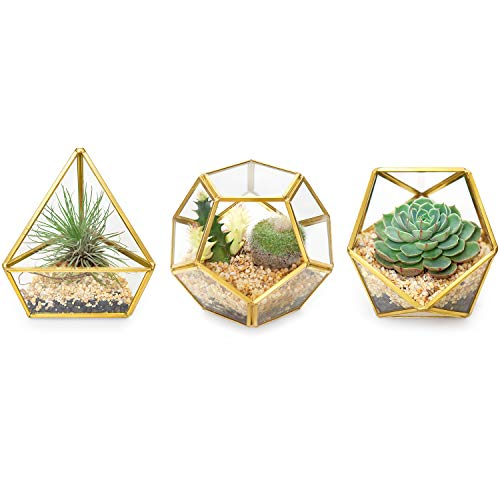

Light-up Terrarium Kit for Kids with LED Light on Lid - Create Your Own Customized Mini Garden in a Jar That Glows at Night - Great Science Kits - Gardening Gifts for Children - Kids Toys - Dan&Darci
$24.99
Buy on Amazon
Manufacturer description
- 🌱 WHAT IS A TERRARIUM? It is a miniature garden within a container that simulates a natural environment. So, let your child discover the beauty of nature by creating their own beautiful terrarium with this all-inclusive kit. Watch as it grows by day and glows at night with the innovative LED light under the lid.
- 💡 GROWS BY DAY, GLOWS AT NIGHT: Beneath the lid, there is a built-in innovative LED light that transforms the experience into something magical. At night, just hit the small switch to turn on the light and watch how your terrarium turns into a gorgeous illuminated tabletop garden. You have to see it to believe it! The light can easily be recharged with the included Micro-USB cable.
- 🔧 KIT INCLUDES: Terrarium jar (4"x6"), light-up jar lid, Micro-USB charging cable, clear and easy step-by-step instruction booklet, vermiculite soil, blue sand, river rocks, wheatgrass and chia seeds, small bunny and mushroom miniatures, removable stickers for decoration, spray bottle, and wooden stick to aid in planting the seeds.
- 🎁 A FUN AND EDUCATIONAL GIFT FOR ALL AGES: It's not often that a science project can be fun and engaging, but this terrarium kit achieves both! It fascinates children as soon as they pull it out of the box. With the freedom to layer the rocks, sand, soil, and stickers as they please, every child is guaranteed to have a blast.
- 🥇 STEM.ORG AUTHENTICATED EDUCATIONAL PRODUCT: This product has been evaluated by STEM.org and has been authenticated to meet the highest standards of STEM learning. 😊 100% SATISFACTION GUARANTEED: Love it, or your money back! We're sure that the child will have a blast, but if you are not satisfied with the kit we'll refund you 100% of the money, no questions asked.